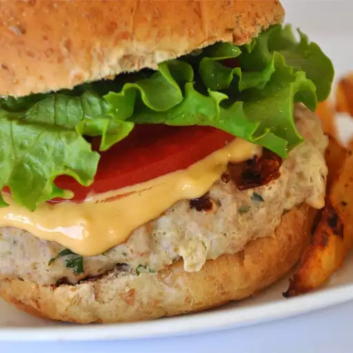

Burger

Description
This burger sauce has a zippy flavor that goes well in sandwiches or as a fry dip. It's a tangy sauce that can be made spicy or milder for kids.
Ingredients
- 1 cup mayonnaise
- ½ cup ketchup
- ¼ cup prepared yellow mustard
- 2 teaspoons dried minced onion
- ¼ teaspoon dried minced garlic
- ⅛ teaspoon white vinegar
- hot sauce to taste
- seasoned pepper to taste
Steps
- Whisk together mayonnaise, ketchup, mustard, onion, garlic, and vinegar in a bowl. Season with hot sauce and seasoned pepper.
- Cover and chill at least 1 hour before serving.
Home